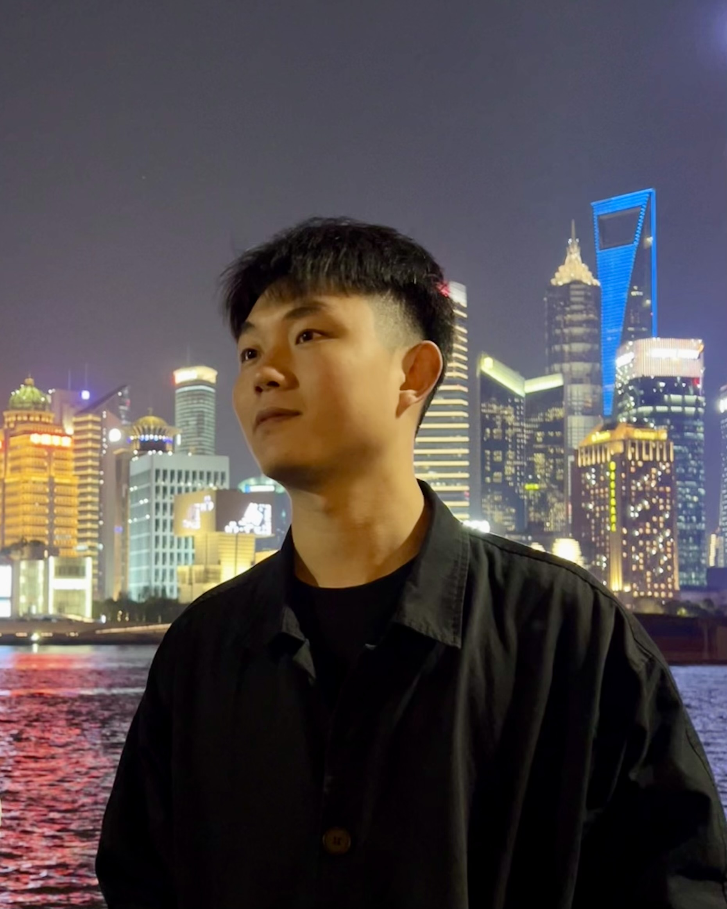

|
 |
Langrui ZhouSchool of Biological Science and Medical Engineering Southeast University [Google Scholar, GitHub] Email: langrui_zhou[AT]seu[DOT]edu[DOT]cn |
I am a postgraduate student from the School of Biological Science and Medical Engineering, Southeast University, where I am very fortunately advised by Prof. Ning Gu and Prof. Guang Li. My research interests include: Deep Learning, Computer Vision, Medical Image Processing and Micro-CT.